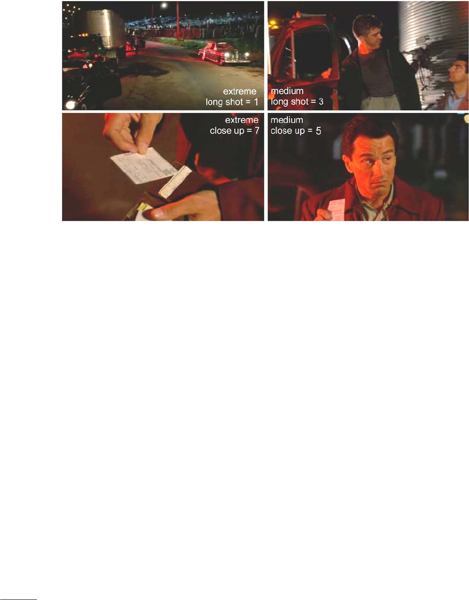
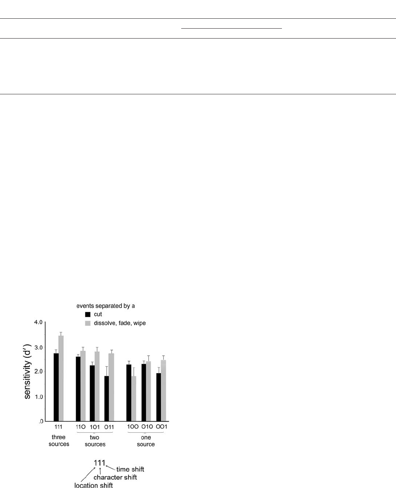
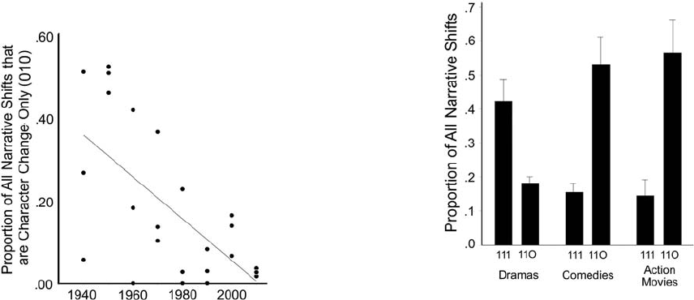

Event segmentation and seven types of narrative discontinuity in
popular movies
James E. Cutting
⁎
Cornell University, USA
abstractarticle info
Article history:
Received 23 September 2013
Received in revised form 10 March 2014
Accepted 15 March 2014
Available online xxxx
PsycINFO classification:
2323, visual perception
2340, cognitive processes
2610, literature and the fine arts
Keywords:
Events
Film style
Movies
Narrative
Scenes
Segmentation
Using a sample of 24 movies I investigate narrative shifts in location, characters, and time frame that do and do not
align with viewer segmentations of events (scenes and subscenes) in popular movies. Taken independently these
dimensions create eight categories, seven of change and one of nonchange. Data show that the mo re dimensions
that are changed the more viewers agree on their segme ntations, although the nonadditive variations across the
seven change types are large and systematic. Dissolves aid segmentation but over the last 70 years they have
been used less and less by filmmakers, except for two infrequent shift types. Locations and characters are strongly
yoked, jointly accounting for most narrative shif ts. There are also in teractions of shift types over the 70-year span
and across genres, as well as differences that affect the scale of the establishing shot in a new scene. In addition,
several aspects of the narratives of individual movies affect the distributions of shift types. Together these results
suggest that ther e are at least four different signatures of narrative shifts to be fo und in popular movies — gener al
patterns across time, patterns of historical change, genre-specific patterns, and film-specificpatterns.
© 2014 The Author. Published by Elsevier B.V. This is an open access article under the CC BY-NC-ND license
(http://creativecommons.org/licenses/by-nc-nd/3.0/).
1. Introduction: popular movies, continuity, and discontinuity
In drama, scene refers to a division within an act of a play, indicated
by a change of locale, abrupt shift in time, or the entrance or exit of a
major character.
(Polking, 1990, p. 405)
Works of theater, l iterature, opera, and film typically present stories
that are broken into chunks. A scene is a medium-size chunk found in
all the narrative arts and often synonymous with the concept of an
event. It is the job of the film director and editor not only to present
these as separate events, but also to elide them so that a semblance of
continuity is maintained. For example, in movies scene boundaries are
often covered by nondiegetic (background) music or occasionally by a
voiceover to maintain the semblance of seamlessness. Continuity is par-
ticularly c ritical to popular movies because they are br oken further i nto
shots — runs of successive f rames divided most o ften by cuts and abrupt
changes in camera position. In this article I focus on discontinuities across
the shot boundaries of the visual narrative that do and do not signal a new
event.
Continuity, long an idea central to filmmaking, is a hybrid concept. It
is partly psychological; continuity is what drives a movie smoothly to a
climax, keeping the viewer engaged and anticipating possible outcomes
while ingesting new information from the plot (Smith, 2012). But con-
tinuity is also a physical concept and can be deliberately broken along
three basic and typically salient parameters of a scene — location, char-
acter, and time. As implied by Polking in the epigram, scenes canonically
take place in a single location, with a single set of characters, during a
single time frame. However, partly because the job of filmmakers is to
mask the sutures across changes in these parameters, the definition of
a scene, like that of continuity, is not only simply structural but also psy-
chological. It is as much defined by film viewers as by filmmakers. My
tasks in this article are to look at the concordance of viewer segmenta-
tions across the various types of narrative shifts in a representative sam-
ple of popular movies; to catalog the relative frequencies of the shifts in
location, characters, and time; to suggest psychological causes for the
differences that affect segmentation; and to reveal under-appreciated
aspects of Hollywood style.
Acta Psychologica 149 (2014) 69–77
⁎ Department of Psychology, Uris Hall, Cornell University, Ithaca, NY 14850-7601, USA.
Tel.: +1 607 592 1994; fax: +1 607 255 8433.
E-mail address: james.cutting@cornell.edu.
http://dx.doi.org/10.1016/j.actpsy.2014.03.003
0001-6918/© 2014 The Author. Published by Elsevier B.V. This is an open access article under the CC BY-NC-ND license (http://creativecommons.org/licenses/by-nc-nd/3.0/).
Contents lists available at ScienceDirect
Acta Psychologica
journal homepage: www.elsevier.com/ locate/actpsy
2. Location, character, and time shifts across scenes
Messaris (1994) surveyed the nature of shifts across edited scenes.
1
From nine fictional television programs and a handful of movies, he
cataloged some possibilities. He counted shifts in location and shifts in
time (flashbacks and flashes forward), but he also considered shifts in
“reality”—moves from diegetic (narrative) time to dreams, memories,
or fantasies, and back again. I will denote such changes as additional
shifts in time (see also Cutting & Iricinschi, in press). The reason is
that visualized dreams occur during sleep (so the character is projected
to a different narrative time), visualized memories are of previous
events (so reflect back in time), and visualized fantasies occur in time
frames that have never happened (and are therefore remove d fro m
the diegetic time stream of events). Moreover, such “reality” shifts are
relatively rare in movies. Indeed, they occur in only three of 24 movies
in the sample I will dis cuss, Nine to Five (1980), Ordinary People
(1980), and Inception (2010), and all of these movies use special stylistic
tools to denote such shifts.
In this article, I follow Messaris' lead in cataloging shifts of location
and time, but I also include character shifts as well. I consider a character
shift to occur either by addition, subtraction, or complete change of
major characters across shots. Cutting and Iricinschi (in press) found
that most movies have ten or fewer major characters and that each typ-
ically appears in at least 8% of all scenes. Thus, the character ensemble is
not usually difficult to track. Individual characters are also typically in-
variant; that is, they usually do not change much physically, perhaps be-
yond aging, across the length of a movie.
2
Time shifts, on the other hand, are often more difficult to detect. To
be sure, many are obvious — day turns into night across a cut; blistering
heat in one shot is replaced by a downpour in the next; a person runs
through an airport and then a plane takes off; or two shots are separated
by a dissolve or a fade, the traditional methods of denoting the passage
of time (Cutting, Brunick, & DeLong, 2011). Unless marked in one of
these visual or conceptual ways, however, it is often impossible to tell
if time has shifted. Without evidence to the contrary, therefore, my stu-
dents and I have coded scene changes as not having time shifts.
Moreover, many temporal ellipses seem insufficiently important or
are simply too small to create a narrative shift. Consider a three-shot se-
quence about 20 min into Erin Brockovich (2000). In the first Erin (Julia
Roberts) sits at her desk as a new employee in a law office trying to un-
derstand connections among folders for a case. A dissolve then occurs
into the second shot and Erin is still at her desk with the same materials
but seen from a different angle. A change of lighting suggests that it is
later in the day. She th en starts to get up and a cut occurs. The third
shot reveals her just arriving at the desk of a co-worker and asking a
question. The diegetic (narrative) time gap between the first and second
shots is likely to be several hours and yet no important action has hap-
pened. The dissolve and the juxtaposition of the two shots simply de-
note that she has been working throughout. The time between the
end of the second and the beginning of third shot is probably 2 or 3 s,
too trivial to count as a time shift. I call this latter time deletion a jump
shift.
3
In playing this sequence to students I have found that viewers
agree that the considerably different-sized temporal lacunas between
the first and second and between second and third shots do not signal
a change of scene.
Similarly, small or large time shifts can occur within what Metz
(1974) called a syntagma — a scene consisting of short subunits, often
single shots, that have no direct relation with one another but that
build to make a point. Consider two examples. First, 11 min into Erin
Brockovich there is a parallel syntagma — a series of shots that alternate
versions of a repeated theme to make a point. Erin collects newspapers
(two shots), circles job ads (four shots), and serially calls potential em-
ployers (19 shots). The whole scene takes about 1 min of screen time.
Traditional continuity is purposefully violated. For the phone calls, she
is alternately dressed in three different blouses, she has three different
demeanors for job inquiry, and she calls from both inside her house
and from a pay phone, sometimes with and without her baby. Clearly
such action takes place in multiple locations and at multiple times per-
haps over weeks, but it coheres as a single, distributed event about a
character's difficulties finding a job. Moreover, when I have pla yed
this sequence to viewers they judge it to be a single scene, often without
noticing anything peculiar about it.
Second, almost 30 min into Ordinary People there is a party sequence
consisting of 18 shots that forms a bracket syntagma.Itsshotseffectively
describe the interactions of upper-middle class adults, showing snippets
of different conversations on unrelated topics that take place in different
rooms of a house among different characters. One can guess that the se-
quence covers the span of about an hour of diegetic time. Thus, although
time cannot be continuous, perhaps not even serially ordered, across the
shots they nonetheless cohere as a single scene and viewers judge them
to be so.
More than character or time shifts, location shifts can be hard to de-
fine. Separate locations are most often delimited by doors (Bordwell &
Thompson, 2004; Burch, 1973; see also Radvansky & Copeland, 2006)
or other barriers, physical or psychological. Many scenes are acti ons
that take place within their co n fines, but naturalistic outdoor scenes
can be unbounded (Magliano, Miller, & Zwaan, 2001). Moreover, if ac-
tors move through a space, even through doors, and the action and con-
tent are not broken then the entirety can be considered a single location.
Magliano et al. (2001) and Cutting and Iricinschi (in press) have worked
through many possibilities and give more examples of what might
count as a single location, and what might not. As with jump shifts,
which allow short bits of time to be elided out of the scene, small chang-
es in location – from one side of a room to another, from inside a car
looking out to outside a car looking in, and even from one end of a tele-
phone call to the other end (which may be a world away) – may not
matter to the viewer. Psychologically important cinematic devices like
eye-line matches, shot/reverse-shot composition, and point of view
editing help knit disparate spaces together.
4
3. Key terms and concepts
Again, a cut is a sharp transition between shots, one frame to the
next. A dissolve is an optical mixture of two shots over a dozen to several
dozen frames (assuming 24 frames/s), where the first shot dominates at
the beginning of the dissolve, and is gradually replaced until only the
second shot remains. A fade is like a dissolve although it goes through
black between the two shots and is usually about twice as long or lon-
ger. A wipe is a transition in which a second shot replaces a first along
1
McCloud (1993) also presented an impressive analysis of the transitions across panels
of comics that are similar to those of Messaris for film. See also Cohn (2013).
2
Of course, there are occasional exceptions. In Mission: Impossible II (2000) the artifices
of wearing tight-fitting masks and external throat devices that change voices allow pro-
tagonist Ethan Hunt (Tom Cruise) and antagonist Sean Ambrose (Dougray Scott) to imper-
sonate other people. But such examples are rare exceptions.
3
I distinguish a jump shift from a jump cut. In a jump cut the camera occupies the same
or nearly the same position in two consecutive shots, but the time frame has jumped
ahead from the end of the first shot to the beginning of the second. In a jump shift the cam-
era occupies different positions in the two shots, but the same amount of time may have
been deleted. The purpose of this second kind of cut is to move the action forward, omit-
ting needless detail about how a character got from one position to the next. Traditionally,
a jump cut was thought toviolate continuity; a jump shift does not. In fact it seems to pro-
mote an intensified continuity (Bordwell, 2006). However, jump cuts seem to have be-
come more and more acceptable, and are quite common in contemporary television.
4
Eye-line matches across shots knit the line of gaze of one individual to another in con-
versation. Shot/reverse-shot alternation is the most common form of conversational scene
construction, and typically one person isdisplaced slightly to the right and looks left, while
the other person is displaced slightly left and looks right. This construction typically cre-
ates eye-line matches. Point-of-view (POV) edits, where a character looks off-screen and
the next shot reveals what that character is looking at, are sometimes also called eye-
line matches. POV edits seem to mimic the psychological principle of joint attention (see
for example Carpenter, Nagell, & Tomasello, 1998), where when the character looks off
screen we follow his or her gaze in order to understand what is being looked at.
70 J.E. Cutting / Acta Psychologica 149 (2014) 69–77
a boundary that traverses the screen, usually left to right. Collectively, I
will call fades, dissolves, and wipes by the term noncuts.
Together, I will call cuts and noncuts shot transitions. These contrast
with the change from one potential scene to the next, which I will call
narrative shifts. Narrative shifts occur with visually or conceptually dis-
cernible changes of location, character, or time. Scene changes are psy-
chologically determined by viewers, generally following the narrative
shift information. Notice also that there are typically many shot transi-
tions within a scene. However, when scenes change from one shot to
the next there is necessarily also a shot transition between them, and al-
most always a narrative shift of some kind. The nature of the shot tran-
sitions and narrative shifts are used in this article to inform viewer
segmentations of scenes (events).
Shot scale is the measure of the size of a character or some similar-
sized object within the frame of the image. Cutting, Brunick, and
Candan (2012) found it to be the most potent predictor of event seg-
mentation in popular movies. By convention (see Bordwell &
Thompson, 2004; Salt, 2006) shot scale is divided into seven categories:
(1) extreme long shot, (2) long shot, (3) medium long shot, (4) medium
shot, (5) medium close up, (6) close up, and (7) extreme close up. Fig. 1
shows four of these in stills from four successive shots about 12 min into
Goodfellas (1990). The upper left shows an extreme long shot (1), where
the vertic al extent of the characters soon to be seen is considerably
smaller than the vertical extent of the frame. The upper right follows
in a medium-long shot (3, here a mid-thigh up view) of a trucker
about to be involved with Jimmy Conway (Robert De Niro), a member
of an organized crime group. The lower left shows an extreme close
up (7) of a wallet and fake driver's license held in Jimmy's hand, and
the lower right a medi um close up (5, here mid-chest to shoulders
and up) of Jimmy. Other shot scales are in between these, with a long
shot (2) barely encompassing the head and feet of a character, a medi-
um shot (4) showing him or her from the waist or stomach up, and a
close up (6) showing just the face and the top of the shoulders.
Scenes are typically tied to the physical measures of narrative shifts.
But consider once more the syntagmas from Erin Brockovich and Ordi-
nary People. Continuity of location is violated in the former, continuity
of characters in the latter, and continuity of time is violated in both.
Thus, discontinuities along one or more of Polking's attributes –
location, characters , and time – do not inherently imply that the
scene has changed. Such changes are typically necessary but not
sufficient.
5
The lesson, again, is that scene integrity and scene shifts
are psychophysical hybrids; they are characterized as much by their
psychological impression as by thei r physical construction. An idea
adapted from Aristotle's Poetics (Fyfe, 1932) is that scenes, like the
larger works they are part of, should have beginnings, middles, and
ends. Indeed, Cutting et al. (2012) found that scenes in popular movies
have a physical arc. That is, the first shot in a scene, called an establishing
shot, is generally longer in duration than those that follow and it is also
longer in shot scale. The final shot of a scene is also generally longer in
duration than those that precede it (except for the first).
Subscenes are parts of scenes or sequences, and they are a necessary
descriptive unit in the segmentation of movies (see Bellour, 1976). A
major reason for this unit is the narrative tactic of parallel action, used
particularly in action and adventure movies, of cutting back and forth
between ongoing actions of a protagonist and an antagonist. The pro-
tagonist will do something in one location, the antagonist something
in another, and this alternation may continue for some time. Such
units are subscenes within the larger unit (typically called a sequence)
where the two characters move towards their eventual confrontation.
Although it is important to allow for both scenes and subscenes, this
is not the place to try to distinguish them further. Instead, I will combine
them in a single analysis. The importance of this combination is that it
ties both units to the psychological concept of an event — an action by
someone (or a group) in a given place and at a given time. Events
have proved important in perception, language understanding, litera-
ture, and movies (Cutting, 1981; Cutting et al., 2012; Zacks &
Magliano, 2011; Zacks, Speer, & Reynolds, 2009; Zacks, Speer,
Swallow, & Maley, 2010; Zwaan, Langston, & Graesser, 1995; Zwaan,
Magliano, & Graesser, 1995; Zwaan & Radv ansky, 1998). Moreover,
events can also be of different sizes and nested within one another
(Shaw & Cutting, 1980).
Finally, film style is the particular combination of storytelling tech-
niques used i n a given movie. These include variations in shot duration,
shot scale, shot transitions, camera positions and movement, staging,
lighting,color,andsoforth.Hollywood style is the familiar combination
of a large collection o f such techniques ( Bordwell, Staiger, & Thompson,
1985).
4. The movie corpus, previous results, and a taxonomy of narrative
shifts
In previous research my students and I selected 160 popular, English
language movies, ten each released five years apart from 1935 to 2010,
spread across five genres. All were among the highest grossing movies
of their release year. In search of long-term trends in film style, we seg-
mented these movies into their individual shots and investigated vari-
ous shot properties (Cutting, Brunick, DeLong, Iricinschi, & Candan,
2011; Cutting, DeLong, & Nothelfer, 2010).
From this larger set of movies we selected 24 — one drama, one com-
edy, and one action movie released ten years apart from 1940 to 2010
(Cutting et al ., 2012).
6
We then had eight viewers, three per movie,
view each movie twice. On a second pass through a given movie, each
viewer segmented the shots into events. Five viewers were naïve to
the project, although their results were not systematically different
than those of the other three. Each viewer was assigned their movie as
they had the time to view and segment them. We provided no strict def-
inition of an event to thes e viewers, yet without consultation they
agreed in their segmentations 91% of the time (median κ = .56).
Cutting and Iricinschi (in press) then analyzed narrative shifts ac-
cording to whether they presented changes to a new location, character,
or time frame, or an old one previously seen in the movie. We found
that scale and durations were greater for shots introducing new locations
than old ones. In this article I focus on aspects of viewer segmentations
not previously analyzed by Cutting et al. (2012) or by Cutting and
Iricinschi (in press). That is, I outline seven classes of narrative shifts,
how each of the viewers of each film used them to segment a movie,
and how the shifts follow from the genre and the structure the visual
narrative.
The more than 31,000 shot boundaries across the 24 movies were di-
vided into eight categories, which I will designate with a three-digit no-
menclature, also given in Table 1. The types are: 111, 110, 101, 100, 011,
010, 001, and 000, where the first digit corresponds to the presence (1)
or absence (0) of a location shift, the second to the presence or absence
of a character shift, and the third to the presence or absence of a time
shift. The last category – 000 – is a null-shift. It is used here only as a
basis for signal detection analyses. The remainder of the nearly 3000
scene and subscene changes is distributed across the seven types of nar-
rative shift. In what follows I focus first on viewer segmentations and
their correlates in Hollywood style, and second on the structure of
Hollywood style in light of the seven types of narrative shifts.
5
Observers mark some event boundaries as occurring without location, character, or
time change. An example can occur when calm within a scene erupts suddenly into vio-
lence, as when Tommy DeVito (Joe Pesci), seemingly without much provocation, kills a
bartender in the middle of a poker game in Goodfellas (1990). Scene changes can even oc-
cur within a shot. Consider Valentine's Day (2010), a network movie with twenty main
characters. One shot in a hotel lobby begins with Liz (Anne Hathaway) engaging in phone
sex (one thread of the story) ending one scene and then the camera pans to Morley
(Jessica Alba) checking into the hotel (beginning another). Otherwise the two characters
are never connected in the movie.
6
The movies are listed in the appendix of Cutting et al. (2012).
71J.E. Cutting / Acta Psychologica 149 (2014) 69–77

5. Event segmentation and Hollywood style
5.1. Concordance of viewer segmentations
How well do observers agree in their segmentations? For each
movie, I first divided them across the seven categories of location, char-
acter, or time shift for each movie, and then separated them by whether
the shift was preceded by a cut or by a noncut. Sensitivity (d′) analyses
were performed using the group hit rates for each of the seven classes of
narrative shift for both cuts and noncuts within a movie, then averaging
across them. Within a movie, the pooled false alarm rates were deter-
mined from segmentations at a null shift (000).
7
Fig. 2 shows the results,
with dark bars indicating those scenes and subscenes separated by cuts,
lighter bars indicating those separated by noncuts.
Notice first that there are large differences across shift types. Consid-
er the combined results involving those preceded by cuts (87% of the
sample) and by noncuts. The sensitivity to shifts in which location, char-
acters, and time all change (111) was statistically greater than mean of
those in which only two of these dimensions changed (110, 101, and
011; d′ = 3.06 vs. 2.60, matched-pairs t(22) = 3.45, p b .003, Cohen's
d = 1.47).
8
Moreover, the values for these two-dimension changes
were also statistically greater than the mean of those shifts along only
one dimension (100, 010, and 001; d′ = 2.60 vs. 2.22, t(23) = 4.08, p
b .0005, d = 1.70). This result – that changes over more dimensions
make segmentation easier – seems reasonable. However, it does not in-
herently suggest additivity of scene-change information. As we will see,
these dimensions interact in various ways.
5.2. The effects of shot transitions on detecting scene changes
As should also be clear from Fig. 2 therewasgreaterobserveref-
fic acy in ide ntifying scene boundaries in t he presence of noncuts
than cu ts (mean d′ = 2.78 vs. 2.38; matched-pairs t(15) = 3.77, p
b .002, Cohen's d = 1.95), and this was true for two of the f our indi-
vidual comparisons for which there are sufficient data (all from older
movies): those shift s wi th location, characters, and t ime c hanging
(111; matched-pairs t(7) = 2.79, p b .03, d = 2.11), those with loca-
tion and time changing but not charact ers (101; t(8) = 3.55, p
b .009, d = 2.68).
Thus dissolves, fades, and wipes aid segmentation as filmmakers
have intended. This result is not surprising, but perhaps more impor-
tantly the data also support the idea that contemporary viewers can seg-
ment movies quite well from cuts alone. Moreover, the decline in d′
values can be interpreted as a success of newer Hollywood style by
enhancing the continuity of movies. Given that dissolves, fades, and
wipes can take up valuable screen time, are not wholly required, and
can slow or stop the intended flow of a movie, contemporary film makers
can afford not to use them (Cutting, Brunick, & DeLong, 2011). Nonethe-
less, there are some residual effects of noncuts that I will discuss below.
In contemporary cinema cu ts comprise almost 99% of all shot transi-
tions and even 87% of those separating scenes. But this has not always
been the case. Film style has changed. At the end of the 19th century,
the first movies were single shots of single scenes, soon to be followed
by movies with several shots, each one a s eparate scene and each sepa-
rated by a dissolve or a fade. Dissolves and fades were used particularly
to separate scenes that differed in time. On the other hand, wipes,
which developed later and which have never been as common as the
other two, were u sed typically to change locations and characters with-
out changing time. Straight cuts appeared late in the first decade of film,
but they were a lways used within a s cene. Cuts did not dominate scene
changes until the 1960s (Carey, 1974; Cutting, Brunick, & DeLong, 2011).
In this sample of movies the combined use of noncuts for 111 shifts
fell from 90% in the 1940s and 1950s to 10% in most recent decade (r =
− .76,
t(22)
= 5.53, p b .0001, d = 2.35), and their use fell almost as
strikingly for the other common shifts (110, r = − .64, p b .0008; 101,
r = − .56, p b .004; 100, r = − .47, p b .02). However, the marked ex-
ceptions are those involving time shifts without location shifts (011
and 001). As noted below, these are the least common shifts, and
eight of twelve (67%) of the former and 20 of 28 (71%) of the latter
7
Normally, one does not pool responses across observers for sensitivity (d′)analyses
since grouped rates tend to inflate d′. However, since each observer only contributed
one observation per segmentation, it seemed best to consider each narrative shift as the
unit of investigation rather than each observer. Inaddition, the term sensitivity isnot quite
right in this context, since it emphasizes only the role ofthe perceiver. A better term might
be efficacy, which can stand for both the information about locations, characters, and time
in the movie and the viewer's consideration of them. Finally, false alarms (segmentations
to stimuli without location, character, or time shifts — 000) averaged 2 .2% across all
movies. Va lues of d′ were computed for each movie with sufficient numbers of hits, then
averaged across movies.
8
In several cases, one or more films do not have particular transition types and thus are
not part of the analysis.
Fig. 1. Stills indicating shot scale from four consecutive shots in Goodfellas (1990) about 12 min into the movie. Shot scales can be numbered from 1 (extreme long shot) to 7 (extreme close
up). They are referenced to the size of the human body, with the long shot (=2) barely just encompassing the character from head to toe. Images from DVD, Time Warner Home Video.
72 J.E. Cutting / Acta Psychologica 149 (2014) 69–77

use dissolves. The mean use of noncuts for the other five shifts across re-
lease years is 15%, yielding a strong pattern of differences across the
seven types (χ
2
(6) = 211.6, p b .0001). Moreover, although there are
too few 011 and 001 shifts to calculate statistical trends, there is no ap-
parent decline in the use of dissolves for these over the last 70 years.
Why is the dissolve retained for these two types of shifts? Dmytryk
(1984, pp. 83–84) suggested that the purpose of a dissolve is to act
like a “time machine” giving full warning to the movie viewer that
time has elapsed. I take the high percentages of dissolves for 011 and
001 narrative shifts as evidence that these are otherwise difficult to
comprehend.
5.3. How shot scales vary across shift types to aid segmentation
Characters are critical to movie narratives, but environments are also
important in showing the movements of those characters through the
story. If characters are to be recognized they should be relatively large
within the frame (implicating shorter shot scales); if locations are to
be registered by viewers more of them should be visible (implicating
longer shot sc ales). Movie framing thus creates a conflict. The larger
the images of the characters the less of the location can be seen, and
the more of the location that can be seen the less distinct are the char-
acters. Thus, narrative shifts involving characters and locations, together
and separately, ought to have distinctive shot scales in their establishing
shots.
But first, I should note that shot scales have generally changed in
movies over the last 70 years (Cutting & Iric inschi, in press; Cutting
et al., 2012; Salt, 2006, 2009). In particular, the average shot scale has
become shorter, in our data moving from roughly a medium long shot
(~3.3) closer to a medium shot (~3.8). For these reasons, I normalized
the shot-scale data within each movie then aggregated them across
the 24 movies.
Several effects for shot scale are embedded within the data of the
rightmost column of Table 1. Notice first that the mean non-
normalized shot scale for null shifts (000) is considerably shorter than
for any of the non-null shifts. This effect was a focus of Cutting et al.
(2012) and of Cutting and Iricinschi (in press); shots wit hin a scene are
generally much shorter than establishing shots. Second and more impor-
tant in this context, after shifts in location but not characters (101 and
100) the establishing shot has a longer scale than that after shifts of
both location and characters (111 and 110) (t(22) = − 2.25, p b .035,
d = .96). Mean non-normalized scale values are 1.76 vs. 2.15, respective-
ly. As noted above, this difference shows that filmmakers know that they
need to show viewers sufficient amounts of the new environment
around characters that have already been established.
On the other hand, after shifts in which the character changes but
not the location (011 and 010) the establishing shots of the new scene
have scales that are shorter than the average of those in which both
shift (111 and 110), 2.69 vs. 2.15 (t(22) = 4.4, p b .0002, d =1.88).
As noted earlier, this too makes sense. Given that the environment is un-
changed the cinematographer need not step back and show the loca-
tion, and given that a new character has entered it is prudent to offer
the viewer a closer look at her or his face.
Now reconsider the mean values in establishing shot scale when
both locations and characters change (111 and 110). Their intermediate
scale values suggest opposing, psychologically driven effects. They are a
compromise between moving back (or shortening the lens) to give the
viewer more informat ion about the new location and moving in (or
lengthening the lens) to gi ve the viewer a better look at the faces of
the new characters.
6
. How stories are told in Hollywood style
6.1. Distributions of narrative shift types
How are these various shift types used in visual narratives? As a first
step, I next assessed the percentages of these seven different types of
narrative shift within each movie, and then averaged them across the
Table 1
Codes for narrative shift types, their relative frequency, and the scale of the establishing shot after them.
Type Description Percentage of all narrative shifts Mean scale of the establishing shot
In 24 Movies In The Red Balloon
111 Shifts in location, characters, and time 30.3 5.5
a
2.03
110 Shifts in location and characters, but not time 41.0 11.9
a
2.30
101 Shifts in location and time, but not characters 6.3 29.9
b
1.67
100 Shift in location, but not characters or time 7.6 45.0
b
1.94
011 Shifts in characters and time, but not location 0.4 0.9
c
3.11
010 Shift in characters, but not location or time 13.5 5.5
c
2.62
001 Shift in time, but not characters or location 0.9 0.0
b
2.25
000 No shift in location, characters, or time ––
c
(3.88)
Codings of Magliano and Zacks (2011).
a
Action discontinuities.
b
Spatial–temporal discontinuities.
c
Continuity edits.
Fig. 2. The segmentation concordance of observers across the 24 movies (3 observers per
movie), under conditions in which the scenes are separated by cuts or by dissolves, fades,
or wipes. The three integer places denote presence (1) or absence (0) of a location shift, a
character shift, and a time shift, respectively, as denoted in Table 1. Error bars are one stan-
dard error of the means.
73J.E. Cutting / Acta Psychologica 149 (2014) 69–77

24 movies. Results are shown in the third column of Table 1. Notice that
there are striking differences across the set, well beyond what might be
expected by chance, assuming that each shift type would have occurred
one seventh of the time (χ
2
(6) = 2764, p b .0001). By far the m ost fre-
quent narrative shift is that where both characters and location shift
but time frame does not (110); 41% of all narrative shifts are of this
type. The next most common is a shift where everything changes —
location, characters, and time (111, 28%). Thus, locations and characters
shift together across almost 70% of all narrative shifts in popular movies,
a number that is fairly uniform in this sample over 70 years.
The third most common shift involves characters but neither loca-
tion nor time (010, 13%), although as I discuss below this value has
not been stable over release years. The fourth is its reciprocal involving
only the location and time shifts but not characters (101, 9%), and the
fifth concerns only location shifts (100, 7%). The final two, as noted
above, are quite rare – time shifts alone (001, 1%), and shifts where
both characters and time shift but location does not (011, b 1%) – just
as Messaris (1994) might have predicted. Coupled with their frequent
and continued use of dissolves, their rarity adds force to the notion
that these two shifts are difficult to understand.
6.2. A historical change in Hollywood style
Has the use of any of these narrative shifts changed over time? There
is only one case – where only characters change (010) – and it is shown
in Fig. 3 to have a sharp decline across release years (r = .64, t(22) =
3.91, p = .0008, d = 1.67). One major reason for this trend is that the
older comedies and dramas were often adapted from live theater and
retained their general economy of sets. Thus, characters walk in and
out of a single location and without breaks in time. As they converse,
the tone or the direction of the plot often turns. Notice also that this
type of narrative shift is almost nonexistent in contemporary movies.
Another reason for the decline may be related to the increasing struc-
tural compactness of contemporary movies, called intensified continui-
ty (B ordwell, 2006). At a sh ift in which only the chara cters change
within a given location and time frame, something must account for
the switch otherwise the change in social situation may appear rude
or too coincidental without additional material. My guess, then, is that
contemporary screenwriters and filmmakers may avoid such situations
on grounds of streamlining the narrative.
6.3. Larger narrative effects on shift types
Movies are different in different ways. How do the patterns of
narrative shifts change under th e constr aints of genre or t hrough
idiosyncrasies of the story line? Consider first genre differences. For
thos e boundaries in which locations and characters both shift (111
and 110) there is a strong difference across the three genres (χ
2
(2) =
440.2, p b .0001). Table 1 shows that shifts of location and characters
but not of time (110) are more common than those across all three di-
mensions (111). However, for the eight dramas the reverse is true, as
shown in Fig. 4: Narrative shifts across all dimensions are more com-
mon. Given that this effect is uniform across the 70 years of filmmaking
explored in this sample, I found this resul t surprising and worthy of
pursuit.
To find probable cause, I estimated the lapse of diegetic time across
each of the 24 movies, and enlisted several graduate students who
were familiar with the movies to do the same independently of my es-
timates. I then log transformed the mean days estimated. Our results
suggest that dramas entail a longer-duration story (detransformed
mean = ~ 260 days) than do comedies and action movies together
(mean = ~13 days, t(22) = 3.03, p b .007). For example, Goodfellas oc-
curs across 15 years and Erin Brockovich across three years (both
dramas); but Home Alone (1990) covers perhaps three days and Ocean's
Eleven (1960) probably a week (both comedies); while Beneath the
Planet of Apes (1970) is likely only a few days, and Die Hard 2 (1990)
perhaps only 8 h (both action movies). Thus, it seems sensible that be-
cause dramas unfold over a greater interval, more narrative shifts will
incorporate shifts in time.
Consider next individual movies and narrative effects on shift type.
Since Die Hard 2 (1990) takes place over only a few hours, one would
expect few narrative shifts to invoke a temporal component (111, 101,
011, or 001) — and indeed, by my count, there are none. In contrast
Goodfellas, as it unfolds over years, has many changes involving time,
125 of the 173 shifts (72%). Mission: Impossible II involves a typical pro-
tagonist/antagonist opposition found in action movies and one expects
many subscenes interleaved with one another, changing characters and
locations but not time (110) before a final climax. And indeed, 138 of
the 184 shifts (75%) do just this. And in Harvey (1950), a studio-era ad-
aptation from live theater, one expects – as noted earlier – that locations
would stay relatively consta nt and have characters move in and out
(010), broaching different issues as the plot develops; 36 of its 71 narra-
tive shifts (51%) are of this type.
But one of the more interesting effects, as noted earlier, concerns
movies with “reality” shifts (Messaris, 1994). Inception and Ordinary
People are tw o of the three movies in this sample that shift in this
Fig. 3. A scatterplot of the frequencies across the 24 movies, and a regression line, of the
occurrence of narrative shifts that feature character changes but neith er location nor
time changes (010). The decline denotes a historical change in Hollywood film style.
Fig. 4. A comparison across genres (8 dramas, 8 comedies, and 8 action movies) of the rel-
ative frequency of narrative shifts where locations, characters, and time all change (111)
compared to those where location and characters shift but not time (110). Error bars are
one standard error of the means.
74 J.E. Cutting / Acta Psychologica 149 (2014) 69–77
way, and both do so extensively. Both movies use color quite successful-
ly to denote these changes.
9
Many diegetic scenes in Ordinary People
show Conrad (Timothy Hutton) in anguish over the death of his brother
in a joint sailing accident. Intercut with these subscenes are visualized
memories of that event, which are strongly tinted blue. In Inception
the four different dream levels take place in a grayish, rainy urban land-
scape; a hotel interior paneled in lush browns; a mountainous land-
scape covered with deep snow; and the generally brown interiors
of an apartment. Cutting et al. (2012) found that in both movies
color change predicted viewer segmentations better than any other
variable — shot duration, shot scale, motion, or luminance.
Inception is particularly daring in its structure, with shifts from
diegetic reality to and across dream levels and with the protagonist
Cobb (Leonardo diCaprio) having memories that interpolate at two of
these levels. By my counts the narrative traverses dream levels or goes
from one dream level to a visualized memory 176 times across the
course of the movie. Thus, one might wonder what aids the filmmakers
have offered, other than color changes, to help viewers follow the narra-
tive. The pattern of frequencies for the seven types of narrative shift in
Inception is not markedly different than that for any other movie, with
one exception. Instead of accounting for only 9% of all shifts, the shift
of location and time but not character (101) accounts for 25% of them.
Only one other movie in this sample, Grapes of Wrath (1940), has a
higher proportion of 101 shifts. That movie is the story of an extended
family traveling together from Oklahoma to and through California in
search of work. It seems inevitable, then, that locations would change
with and over time, but that the characters would remain largely the
same. Indeed 36% of all scene changes were of the 101 type, the most
common type in that movie. Yet because Grapes of Wrath is an older
movie with many fewer scenes (and no subscenes), it has only 25 of
these changes, only about one quarter of the number in Inception.
In Inception there is also a scale difference in the establishing shot
after such shifts. The scale after a 101 shift is nearly a medium shot
(3.7), but the establishing shot after the other six shifts is closer to a
medium-long shot (3.27, t(117.4) = 2.87, p b .005, d =.53).Moreover,
in Inception these post-101-shift shots are tighter in scale than those in
the other 23 movies of the sample (3.7 vs. 3.3, t(109.5) = 3.1, p b .0012,
d = .59). Why might this be the case?
Of the 120 shifts across dream levels and memories in the last third
of the movie, 58 (47%) are of type 101. Typically, the last shot of one
subscene is fairly tight on a particular character at one dream leve l,
and the establishing shot of the next is fairly tight on the same character
at a different level. Given that viewers must assume that characters can-
not be simultaneously in two places at once within the same dream or
memory, these character-constant shifts (101) are strong visual signals
that a dream-state or dream-to-memory state change has occurred. The
use of these 101 shifts may be particularly important for those between
dreams and memories — subscenes of which are often only one shot
long. Indeed, 15 of 22 shifts (68%) from a dream level to one of Cobb's
memories and back are of the 101 type.
6.4. The movies of this sample and The Red Balloon
How do these results on the distribution of narrative shifts compare
with those in the literature? The movie that has received perhaps the
most psychological attention is The Red Balloon (1956), a charming
32-min movie with almost no dialog, about a boy and a balloon that fol-
lows him through a neighborhood of Paris (see Zacks & Magliano, 2011;
Zacks et al., 2009; Zacks et al., 2010). Magliano and Zacks (2011) seg-
mented the movie's shots into three categories — those following conti-
nuity edits (n
= 111), those following spatial–t
emporal discontinuities
(n = 81), and those following action discontinuities (n = 19).
For this project I also segmented The Red Balloon, but according to
the scheme used in this article and without first consulting Magliano
and Zacks's results. Although our categories differ, the correspondence
of my scheme converted to theirs is almost perfect (r = .999, t(1) =
24.4, p b .026). The continuity edits correspond to the null-shift type
(000; n = 102) plus the two least common shift types (011 and 010).
Given that this movie has only two main characters (the boy and the
balloon) my coding of the 011 and 010 shifts (ns = 1 and 6) involved
those few shifts when the boy and the balloon are separated, wondering
where each other is, but in essentially the same location. These can be
regarded as consistent with continuity editing. The spatial–temporal
discontinuities of Magliano and Zacks correspond to the 101 and 100
narrative shifts (ns = 34 and 49), where the character does not change
but the location does.
10
In other words, these are shifts of either space,
or of space and time. The Red Balloon has no shifts of time alone (001).
Finally, the action discontinuities of Magliano and Zacks correspond to
those shifts in which both the location and the characters change (111
and 110, ns = 6 and 13), regardless of whether there is a shift in time.
The percentage frequencies of the various shifts in The Red Balloon
are shown in the fourth column of Table 1. Notice that they are consid-
erably different than those aggregated across the 24 movies studied
here, shown in the third column (χ
2
(6) = 331, p b .0001). Most of
this difference may be accounted for by the fact that there are only
two main characters in The Red Balloon versus the mean of ten in the
sample studied here. Given that the boy and the balloon are almost al-
ways seen together there are very few 111 and 110 narrative shifts,
which are the two most common in the movies of this sample. These
shift types are also those that had the most reliable behavioral and
fMRIresultsasreportedinMagliano and Zacks (2011). Their former re-
sults are generally consistent with the results s hown i n Fig. 2 .
6.5. Narrative shifts in movies and texts
Finally, how do narrativ e shifts in movies compare with those in
text? Considerable work in event indexing and related approaches to
discourse processing has looked at the effects on readers of shifts in lo-
cations, characters, time, and other factors in texts of various kinds (for
example, Zacks et al., 2009; Zwaan, Langston, & Graesser, 1995; Zwaan,
Magliano, & Graess er, 1995; Zwaan, Radvansky, Hilliard, & Curiel, 1998).
In general readers are slowed by such changes as they update their
mental representations of the ongoing narrative. Some analogous re-
sults appear to occur in movies as well (Cutting & Iricinschi, in press)
in that establishing shots of a scene are longer in duration and scale if
they present new information.
It was important in some of these works on text to note that shifts in
the three indices studied here – location, characters, and time – are gen-
erally uncorrelated. This lack of correlation facilitated conclusions that
shifts are additive in their effects on reading time (Therriault, Rinck, &
Zwaan, 2006; Zwaan, Langston, & Graesser, 1995). Table 2 lists the cor-
relations between these indices for these various works, which mostly
used short stories as their stimulus material. In general these correla-
tions were assessed within the units of a sentence or occasionally a
clause.
How does one compare the textual results with those of movies?
Analogies between text and film can be fraught, but there are few
movie units that are contenders for the analog of the sentence in text.
Film theorists (Metz, 1974), practitioners (Monaco, 1977)andpsychol-
ogists (Carroll & Bever, 1976) agree that the shot is most like the sen-
tence. Both are structural units, have discrete beginnings and ends (at
9
Nine to Five isthe third film inthis sample that has change-of-reality shifts of the man-
ner that Messaris discussed. The three main characters Judy (Jane Fonda), Violet (Lily
Tomlin), and Doralee (Dolly Parton) bond over their mistreatment by their boss, Frank
(Dabney Coleman). In an apartment each day dreams of retribution and these are visual-
ized and separated from diegetic reality by special wipes (iris ins and outs) and special ef-
fects — one dream isdark and inessentially black and white, another has animated cartoon
creatures in it, and a third is staged as a western. There is no way one could mistake these
for diegetic reality.
10
Most (32 of 49, 65%) of the location-only shifts (100) occur consecutively in the “gath-
ering of the balloons” sequence just before the final scene of the movie.
75J.E. Cutting / Acta Psychologica 149 (2014) 69–77
least with cuts), can be of almost any length, and can carry prodigiously
different amounts of information. Moreover, for decades the average
shot in the average movie took the same amount of time as it takes an
average reader to read an average sentence. That is, if an individual
reads at 200 words per minute and if the average sentence is about 15
words (Cutts, 2009), then the average sentence will be read in 4.5 s.
This is the duration of the average shot for movies released between
about 1975 and 1995 (Cutting, Brunick, DeLong, Iricinschi, & Candan,
2011).
The methods and content used across these other studies and this
one are quite varied so it is difficult to compare results. For example,
few of the texts used in the discourse literature have dialogs, one char-
acter speaking after and in response to another. If they did, these might
be coded as having a character change after every utterance. In popular
movies, on the other hand, a large proportion of screen time is devoted
to dialog, which is typically done in shot/reverse-shot (reverse angle)
style. That is, often after an establishing shot showing both speakers,
the camera alternates focus on one person, then on the other. I have
not counted these as character changes, and because of expectations
in turn-taking (e.g. Sacks, 2000) viewers would be surprised if the char-
acters did not alternate in what they say.
In addition, there are differences according to how the correlations
are calculated. If the correlations are calculated on every shot change
(or every word change) the high probably of no shift after every shot
(or word) inflate s the correlations. If however the correlations are
done on every event boundary, the correlations decline dramatically.
Since the correlations in the text domain were done on event bound-
aries, I report those for movies as well. With these caveats in mind
and as shown in Table 2, the correlations among shifts in location, char-
acters, and time in the sample of 24 movies studied here are reasonably
in line with those of the various texts from short stories and diary ac-
counts used elsewhere in the discourse literature.
7. Summary an d conclusions
Seven types of narrative shifts were described involving the
presence (1) or absence (0) of changes across locations, characters,
and time, respectively — 111, 110, 101, 100, 011, 010, and 001. Several
patterns were decanted from observers' segmentations aligned
with these types of narrative shifts in 24 movies. First, the more
dimensions – location, characters, or time – that change, the more con-
sistently viewers segment. Second, although observers are somewhat
more consistent when the changes are accompanied by dissolves,
fades, and wipes, they are also quite consistent without them. It seems
likely that the marginal loss in segmentation performance would be
outweighed in the minds of contemporary filmmakers by the impor-
tance of accelerating the narrative with fewer noncut transitions. More-
over, I suggest that a certain amount of perceptual elision between
scenes actually contributes to continuity.
The relative frequencies of the seven shifts are quite varied. Location
and character shifts have a strong tendency to co-occur (111 and 110)
and these types are by far the most common, accounting for abou t
70% of all narrative shifts. Time changes are somewhat more indepen-
dent of locations and characters, and their frequency of occurrence
seems to dep end more on the du ration of diegetic time within the
movie; the longer the period the movie covers, the more often they ap-
pear. In particular, dramas tend to have more shifts across time than do
either comedies or action movies. There are, however, idiosyncratic pat-
terns of shifts in many movies that derive from special aspects of their
narratives. The Red Balloon, intensively investigated by Zacks and col-
leagues, is one such case.
Some types of narrative shift are quite rare. The least common are
those where location does not change, time does change, and characters
either change (011) or do not (001). Together these account for less
than 2% of all shifts in this sample. More over, filmmakers seem to
know that they are difficul t to process since about two-thir ds of
those that do occur are accompanied by a dissolve, the most tradi-
tional method of signaling a time change. Dissolves are otherwise
rare in con temporary movies, and narrative shifts in which the char-
acters change but the location and time do not (010) ha ve become
rare as well, marking a difference in Hollywood style from 60 and
70 years ago.
Finally, shifts involving location changes without character changes
(101 and 100) tend to be followed by an establishing shot with longer
scale (more of the environment is shown) than others, and changes in-
volving character shifts alone (011 and 010) tend to be followed by an
establishing shot with a shorter scale (offering more of a close up of
the new cha racter). The intermediate shot scale values for changes
wh
ere locations and characters (111 and 110) shift together seems to
result from a compromise between moving out to show the new envi-
ronment and moving in to show the face of the new character.
Together these results suggest that there are four differen t signa-
tures of narrative shifts to be found in popular movies — general
patterns across time, historically changing patterns, genre-specificpat-
terns, and film-specific patterns.
In addition these results also support our previous claims (Cutting,
Brunick, & DeLong, 2011; Cutting & Iricinschi, in press; Cutting et al.,
2010; Cutting et al., 2012) that the structure of popular movies, and
the changes in that structure over the last 80 years, are fit to perceptual
and cognitive processes that allow movies to be faster paced but still
easy to understand. Moreover, we know that in real life and in movies
this segmentation process is an aid to memory and comprehension
(Zacks et al., 2009; Zacks et al., 2010). Thus, understanding the reasons
for why and how viewers segment movies into events brings us closer
to understanding why we find them such a powerful component of con-
temporary visual culture.
Acknowledgments
Thanks to Kate Brunick, Ayse Candan, Jordan DeLong, and particular-
ly Catalina Iricinschi for earlier work, discussion, and guidance assem-
bling all of this material; to Michael Masucci for his early help in scene
coding; and to David Field, Khena Swallow, James Golden, and Kedar
Vilankar for broader discussion.
Table 2
Correlations among location, character, and time shifts in text and in movies.
Source Location/
characters
Location/
time
Characters/
time
Text
Zwaan, Langston, and Graesser (1995)
a
.16 .29 .13
Zwaan, Magliano, and Graesser (1995)
Experiment 1
b
.15
Experiment 2
c
.00
Zwaan et al. (1998)
Experiment 1
d
.22 .35 .28
Experiments 2 & 3
e
− .03 .32 .30
Zacks et al. (2009)
Experiments 1, 3, and 4
f
.15 − .05 .00
Mean & 95% confidence interval .15 ± .11 .18 ± .14 .18 ± .14
Movies
Zacks et al. (2009)
Experiment 2
g
.37 .26 .21
The 24 films in this sample
h
Mean & 95% confidence interval − .06 ± .05 .16 ± .07 − .09 ± .07
a
Unit = the sentence in short narratives.
b
Unit = the sentence in two short stories.
c
Unit = the sentence or clause in two different short stories.
d
Unit = the clause in adaptations of some of Aesop's fables.
e
Unit = the clause in narratives used by Rinck and Bower (1995).
f
Unit = the phrase in narratives taken from a descriptive diary.
g
Unit = consecutive 5 sec intervals in The Red Balloon (1956).
h
Unit = the shot in 24 popular movies.
76 J.E. Cutting / Acta Psychologica 149 (2014) 69–77
References
Bellour, R. (1976). To analyze, to segment. Quarterly Review of Film Studies, 1(3), 331–353.
Bordwell, D. (2006). The way Hollywood tells it. Berkeley, CA: University of California
Press.
Bordwell, D., Staiger, J., & Thompson, K. (1985). The classical Hollywood cinema: Film style
and mode of production to 1960. New York: Columbia University Press.
Bordwell, D., & Thompson, K. (2004). Film art: An introduction (7th ed.). Boston, MA:
McGraw Hill.
Burch, N. (1973). Theory of film practice. Princeton, NJ: Praeger.
Carey, J. (1974). Temporal and spatial transitions in American fiction films. Studies in the
Anthropology of Visual Communication, 1,45–50.
Carpenter, M., Nagell, K., & Tomasello, M. (1998). Social cognition, joint attention, and
communicative competence from 9 to 15 months of age. Monographs of the Society
for Research in Child Development, 4 (Serial 255).
Carroll, J. M., & Bever, T. G. (1976). Segmentation in cinema perception. Science, 19(4231),
1053–1055.
Cohn, N. (2013). The visual language of comics: Introduction to the structure and cognition of
sequential images. London: Bloomsbury.
Cutting, J. E. (1981). Six tenets for event perception. Cognition, 10(1), 71–78.
Cutting, J. E., Brunick, K. L., & Candan, A. (2012). Perceiving event dynamics and parsing
Hollywood films. Journal of Experimental Psychology: Human Perception and
Performance, 34(4), 1476–1490.
Cutting, J. E., Brunick, K. L., & DeLong, J. E. (2011). The changing poetics of the dissolve in
Hollywood film. Empirical Studies in the Arts, 29(2), 149–169.
Cutting, J. E., Brunick, K. L., DeLong, J. E., Iricinschi, C., & Candan, A. (2011). Quicker, faster,
dark er: Changes in Hollywood film over 75 years. i-Perception, 2.(pp.569–576),
569
–57
6.
Cutting, J. E., DeLong, J. E., & Nothelfer, C. E. (2010). Attention and the evolution of Holly-
wood film. Psychological Science, 21(3), 440–447.
Cutting, J. E., & Iricinschi, C. (2014s). Re-presentations of space in Hollywood movies.
Cognitive Science (in press).
Cutts, M. (2009). The Oxford guide to plain English (3rd ed.). New York: Oxford University
Press.
Dmytryk, E. (1984). On film editing. Boston, MA: Focal Press.
Fyfe, W. H. (Trans.) (1932). Aristotle in 23 Volumes, Vol. 23. Cambridge, MA, Harvard Uni-
versity Press.
Magliano, J. P., Miller, J., & Zwaan, R. A. (2001). Indexing space and time in film under-
standing. Applied Cognitive Psychology, 15(5), 533–545.
Magliano, J. P., & Zacks, J. M. (2011). The impact of continuity editing in narrative film on
event segmentation. Cognitive Science, 35(6), 1489–1517.
McCloud, S. (1993). Understanding comics. Northampton, MA: Kitchen Sink Press.
Messaris, P. (1994). Visual literacy: Image, mind, and reality. Boulder, CO: Westview Press.
Metz, C. (1974). Film language: A semiotics of the cinema. (M. Taylor, Trans.). Chicago: Uni-
versity of Chicago Press.
Monaco, J. (1977). How to read a film. New York: Macmillan.
Polking, K. (Ed.). (1990). Writing A to Z: The terms, procedures, and facts of the writing busi-
ness defined, explained, and put within reach. Cincinnati, OH: Writer's Digest Press.
Radvansky, G. A., & Copeland, D. E. (2006). Walking through doorways causes forgetting.
Memory & Cognition, 34(5), 1150–1156.
Rinck, M., & Bower, G. H. (1995). Anaphora resolution and the focus of attention in situ-
ation models. Journal of Memory and Language, 34(1), 110–131.
Sacks, H. (2000). Lectures on conversation. In G. Jefferson (Ed.), vol. 2, Cambridge, MA:
Blackwell.
Salt, B. (2006). Moving into pictures. London: Starwood.
Salt, B. (2009). Film style and technology: History and analysis.
London: Starwood.
Sh
aw, R. E., & Cutting, J. E. (1980). Clues to an ecological theory of event perception. In U.
Bellugi, & M. Studdert-Kennedy (Eds.), Signed and spoken language: Biological con-
straints on linguistic form (pp. 57–84). Weinheim, Germany: Verlag Chemie.
Smith, T. J. (2012). The attentional theory of cinematic continuity. Projections, 6(1), 1–27.
Therriault, D. J., Rinck, M., & Zwaan, R. A. (2006). Assessing the influence of dimensional
focus during situation model construction. Memory & Cognition, 34(1), 78–89.
Zacks, J. M., & Magliano, J. P. (2011). Film, narrative, and cognitive neuroscience. In F.
Bacci, & D. Melcher (Eds.), Art and the senses (pp. 435–454). New York: Oxford Uni-
versity Press.
Zacks, J. M., Speer, N. K., & Reynolds, J. R. (2009). Segmentation in reading and film under-
standing. Journal of Experimental Psychology: General, 138(2), 307–327.
Zacks, J. M., Speer, N. K., Swallow, K. M., & Maley, C. J. (2010). The brain's cutting-room
floor: Segmentation of narrative cinema. Frontiers in Human Neuroscience, 4,1–15
(Article 168).
Zwaan, R. A., Langston, M. C., & Graesser, A.C. (1995). The construction of situation models
in narrative comprehension: An event-indexing model. Psychological Science, 6(5),
292–297.
Zwaan, R. A., Magliano, J. P., & Graesser, A.C. (1995). Dimensions of situation model con-
struction in narrative comprehension. Journal of Experimental Psychology: Learning,
Memory, and Cognition, 21(2), 386–397.
Zwaan, R. A., & Radvansky, G. A. (1998). Situation models in language comprehension and
memory. Psychological Bulletin, 123(2), 162–185.
Zwaan, R. A., Radvansky, G. A., Hilliard, A. E., & Curiel, J. M. (1998). Constructing multidi-
mensional situation models during reading. Scientific Studies of Reading, 2(3),
199–220.
Filmography
Columbus, C. (Director). (1990). Home Alone. USA: Twentieth Century Fox Home
Entertainment.
Ford, J. (Director). (1940). The Grapes of Wrath. USA: Twentieth Century Fox Home
Entertainment.
Harlin, R. (Director). (1990). Die Hard 2. USA: T wentieth Century Fox Home
Entertainment.
Higgin, C. (Director). (1980). Nine to Five.USA:TwentiethCenturyFoxHome
Entertainment.
Koster, H. (Director). (1950). Harvey. USA: Universal Studios Home Video.
Lamorisse, A. (Director) (1956). The Red Balloon. France: Films Montsouris.
Marshall, G. (Director). (2010). Valentine's Day. USA: Warner Home Video.
Milestone, L. (Director). (1960). Ocean's Eleven. USA: Warner Home Video.
Nolan, C. (Director). (2010). Inception. USA/UK: Warner Home Video.
Post, T. (Director). (1970). Beneath the Planet of the Apes. USA: Twentieth Century Fox
Home Entertainment.
Redford, R. (Director). (1980). Ordinary People. USA: Paramount Home Video.
Scorsese, M. (Director). (1990). Goodfellas. USA: Warner Home Video.
Soderbergh, S. (Director). (2000). Erin Brockovich. USA: Universal Studios Home Video.
Woo, J. (Directo r). (2000). Mission: Impossible II. USA/Germany: Paramount Home
Entertainment.
77J.E. Cutting / Acta Psychologica 149 (2014) 69–77